SAFARI
Users
Apples
[Malus domestica] The cultivated apple originated in Central Asia, around Kazakhstan, where it's wild ancestor (Malus sylvestris) can still be found today. China grows 35% of world production and the US, where apples were introduced by European colonists, is second with 7.5%
There are over 7500 known varieties of apple, the ones listed here are ones commonly available in Southern California. Nearly all are grown in the Pacific Northwest, particularly Washington state, where the weather gets cold enough to set fruit properly.
Braeburn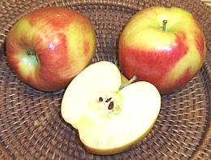 [PLU 4103 (large) 4101 (small)]
An excellent eating apple in my opinion, sweet/tart with good
flavor complexity. The photo specimens, "large braeburn", were typically
3-1/4 inch in diameter and weighed 10 ounces.
Cameo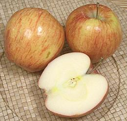 [PLU 3066 (large) 3065 (small)]
A crisp, medium sweet apple with good apple flavor and a very small
core. Excellent for salads. The photo specimens, "large cameo", were
typically 3-1/4 inches in diameter and weighed 9 ounces.
Cosmic Crisp[WA38]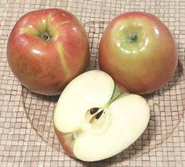 I first noticed this apple here in Los Angeles in late December 2020. It was developed by Washington State University and released in 2019.It is an extremely crisp apple, juicy, with considerable sweetness, and very good apple flavor. It is also very resistant to browning when cut. The cut surface will dry out with no change in color. Ironically, the main objectives of the developers were just durability
and shelf life. The photo specimens were typically 3.3 inches diameter,
2.9 inch high and weighed 9 ounces. The specimens were purchased from a
multi-ethnic market in Los Angeles (Altadena) for 2020 US $0.99 / pound.
Crab Apple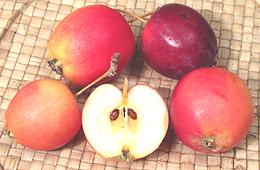 These are fairly close to wild crab apples - note the long stems and small size. The largest was 1-1/2 ounce, 1.6 inch long and 1.7 inch diameter, but most were considerably smaller. These were sold in an Asian market in Los Angels as "Sweet Crab Apple". They were mildly tart with just a hint of bitterness. Crab Apple - So Called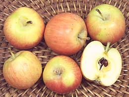 These are crab apples by marketing name only. They are quite small but taste just like regular domestic apples. Rather expensive for eating out of hand but a good size for salads. The photo specimens ranged from 1-1/4 to 1-3/4 inches diameter and weighed between 5/8 and 1-1/4 ounce. Fuji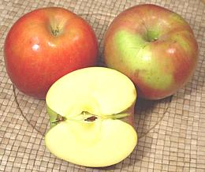 [PLU 4131 (large)] This Japanese style apple is now quite popular here in both "large"
and "small" sizes. It has silky, sweet flesh and light apple flavor.
A quite pleasant snack apple. It can be stored at room temperature or
(longer) refrigerated for longer periods than most other apple
varieties. The photo specimens were the "large" size, typically 3.9
inches diameter and weighed 13-1/2 ounces.
Granny Smith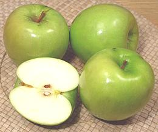 [PLU 4017 (large)] This is the standard cooking apple, firm and tart. It can be stored
at room temperature or (longer) refrigerated for longer periods than
most other apple varieties. The photo specimens were the "large" size,
typically 3.6 inches diameter and weighed 10-1/2 ounces. "Small" and
"lady" sizes are also available.
Jonagold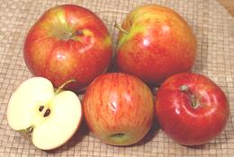 [PLU 4145 (small)]
A good eating apple, almost crisp, sweet-tart with good apple flavor.
The photo specimens were the "large" size (back), typically 2.9 inches
diameter and weighed 11-1/8 ounces and "small" (front) 2.9 inches
diameter and weighed 5-3/4 ounces..
Lady Apple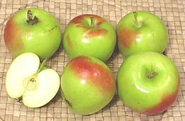 Miniature versions of a number of apples now have the "lady" designation, but this one seems to be the one sold without additional qualifiers, at least around here. They are firm and tart, but not as tart as Granny Smith (for which there is also a "lady" version). The photo specimens were typically 2.1 inches diameter and weighed 2 ounces. Piñata Apple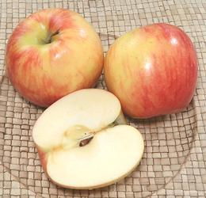 [Pinova, Sonata, PLU #3435] This is a very good eating apple, but also holds up well to various cooking methods, including poaching, baking, and used in stuffings. It is thin skinned, crisp, juicy, sweet, and with a firm smooth flesh. I consider this one of my favorite apples. This is a medium size apple up to about 3.5 inches diameter and 9.5 ounces. The Piñata apple was developed in Germany in the 1970s,
and it was sold in Germany until 2004 when growing rights were
purchased by the Stemilt company of Washington State USA. Supposedly
it is stored until after Christmas and then released, but I have
purchased them in November 2019 here in Los Angeles, for as low as
2019 US $0.79 / pound.
Red Delicious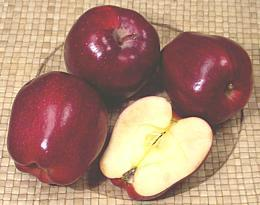 [PLU 4015 (small)] This was once the dominant apple available in stores - until growers in the Pacific Northwest discovered that people actually wanted apples with more apple flavor. These are easily recognizable by their perfect intense red color and pointy shape. At best they are crisp and juicy, moderately sweet, but
have little flavor. At worst they are dry, pasty and flavorless. They
also don't cook well. They are subject to freeze damage when the flesh
will be discolored and slightly translucent. The photo specimens were
typically 2.9 inches diameter and weighed 6-5/8 ounces - this is the
"small" size. Large ones run about 3-1/4 inches diameter and weight
about 10 ounces.
Spartan Apple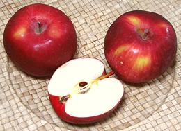 [PLU 4177, 4178 (small) 4179, 4180 (large)]
This medium size apple is a very good general purpose variety. It has
good flavor and sweetness. Developed in Canada, this was to be the
first apple resulting from "scientific breeding" - but something went
wrong. It was supposed to be a cross of McIntosh and Newton Pippin,
but its mother was fooling around on the side. Recent genetic
analysis shows no relationship to Newton Pippin - and the father is
still unknown. Well, this is the case for 10% to 20% (depending on
demographics) of humans here in North America. The photo specimens
were about 1.9 inches diameter and weighed 5-3/4 ounces.
|
Pears
[Nashpati (India), Pyrus species] Pears are thought to have originated in Central Asia, but have been in European cultivation for something like 10,000 years.
Pears are not allowed to ripen on the tree because they will become gritty and won't sweeten well. Fully ripe pears are also so tender shipping would be a real problem, Buy them fairly firm and let them ripen on the counter. The exception is Asian pears (including Yali) which do sweeten on the tree.
d'Anjou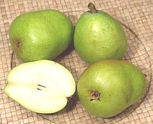 [Anjou, P. communis]
Originally known as Beurr d' Anjou, this pear is thought to have
originated near Anjers, France. d'Anjous are excellent cooking pears
when used before they are completely ripe. Fully ripe they are good
for snacks and salads. These pears do not change color as they ripen
- available October through June.
Asian Pear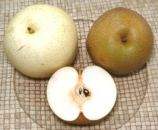 [#4408; Nashi Pear, Apple Pear, Sand Pear, Japanese Pear, Korean Pear, Chinese Pear; Bae (Korea); Nashpati (Nepal, Himalayan states of India); P. pyrifolia] These pears have become quite common and affordable in markets now that they are grown commercially in Southern California orchards. In Korean grocery markets here you can buy much more expensive ones shipped from Korea and claimed to be superior. These pears are particularly popular in Korea, where the juice is often an ingredient in meat marinades, particularly for beef. These pears are available from two cultivar groups, "Russet" and
"Green". A Russets to the right in the photo and the "Green" is to
the left. The russet in the photo is a bit smaller, but that is not
a characteristic, both can be up to a little over 1 pound. Compared to
Western pears these have crisp, grainy flesh and a high water content,
and are apple shaped rather than pear shaped. They are not cooked due
to their high water content, but are commonly served raw and peeled.
They are also used ground as a sweetener in sauces and for marinades.
Unlike Western pears these pears ripen fully on the tree. The larger
of the photo specimens was about 3-5/8 inches diameter and weighted
14-5/8 ounces. The Russet, grown in USA, was purchased from a produce
store in Los Angeles at 2015 US $0.99 / pound, and the Green, imported
from China, from an Asian market for 2015 US $1.39 / pound. The russet
are available most of the year now.
Bartlet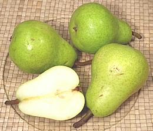 [Williams (everywhere except the US); P. communis]
This is the most commonly used pear for canning, making into preserves
and chutneys and for drying. They are also a fine snack pear when ripe.
This pears change color from green to bright yellow as it ripens -
available August through January.
Bosc Pear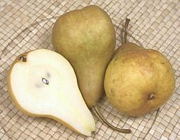 [Beurre Bosc, Kaiser Alexander, PLU 4413 (large), 4026 (small); P. communis] Originally from Belgium or France, this is a crisp pear of moderate sweetness with a very small core (I usually just swallow the seeds rather than bothering to core these). I consider this a fine eating pear and it's usually inexpensive, but some may prefer a softer sweeter pear. Bosc pears are unusual in that they become sweet and ready to eat while
still very firm. Check ripeness by finding some give to thumb pressure at
the stem end. Because it's flesh is firm and aromatic this is considered
an excellent cooking pear. The photo specimens were typically
2-5/8 inches in diameter, 4 inches long and weighed 6-1/2 ounces, but
they do get larger - these were marked PLU 4026 "Small Bosc". These
pears do not change color as they ripen - available September through
April. Photo by Agyle contributed to the public domain.
Comice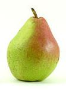 [Doyenn Du Comice, P. communis]
Officially Doyenné du Comice, this is an excellent desert pear.
Juicy and sweet, it goes well with cheese. It originated in Angers,
France in the mid 1800's and is mostly green, but a red versions was
discovered in Medford Oregon between 1960 and 1970. Comice accounts
for only 1% of US production. Available September through February.
Photo by Agyle (cropped) contributed to the Public
Domain.
Forella Pear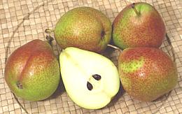 [PLU 4418; P. communis] These tiny pears originated in Germany and the name means "trout", given for the freckles which are like those of the fish. They are in limited production in the Pacific Northwest but available in some Southern California produce markets when in season - but they are rather high priced at about 2010 US $1.99 per pound, while regular pears are selling for $0.79 per pound. They start out green with red blush and freckles. The red stays but
the green background turns to yellow as they ripen. Green, the flesh is
very hard without much flavor. The photo specimens were typically 2.2
inches in diameter and weighed 3-3/8 ounces. Available
from September through February.
Red Pear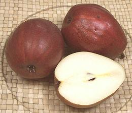 [P. communis]
"Red Pear" can refer to red skinned varieties of a number of different
pears that usually appear in green or yellow. The photo specimens are
red d'Anjou pears. Red Bartlets exist, though I haven't yet seen them
in markets. They are a very brilliant red and have more of a neck than
the d'Anjous. A red version of the Comice was discovered in Oregon but
is not yet common in Southern California markets.
Seckel Pear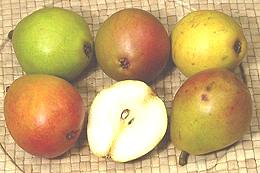 [Sugar Pear, PLU 4422; P. communis]
This is the smallest of all commercial pears and also the sweetest of
all pears. It was discovered near Philadelphia in the 1800s, ancestry
unknown. These pears are green, sometimes turning yellowish when ripe
and often having a dark red blush - which in some cases may cover
the entire pear. Hard ones should be ripened at room temperature until
they yield slightly to pressure. The photo specimens
were just under 2 inches diameter and weighed 2-1/2 ounces each, and
were selected for the maximum range of color. Available September
through February.
Tosca Pear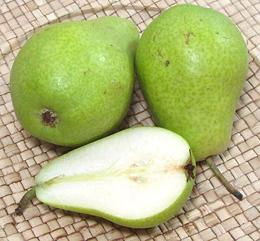 [P. communis]
This pear is a recently developed cross between Coscia and Bartlet
(Williams bon Cretien) from Italy. It is now grown in Washington State,
mostly Organic, and is the first pear to ripen in that state. Flesh
is crisp and lightly sweet with very fine graininess. The largest of
the photo specimens was 2.5 inches diameter, 3.5 inches long and
weighed 5-5/8 ounces. The smallest in the batch was 2.1 inches
diameter, 2.5 inches long and weighed 2-7/8 ounces. It becomes
available in late August, but the photo specimens were purchased
in Los Angeles in late September.
Yali Pear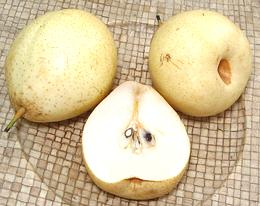 [#4890, Ya Pear; Ya Li (China); China White Pear; P. x bretschneideri or possibly a subspecies of P. pyrifolia]
This pear seems an experiment to see just how much of a fruit can be
water and still have crisp flesh. Eating one of these is practically
like eating a glass of water instead of drinking it. The flesh is,
however, crisp and they are moderately sweet. Unlike
Asian Pears they are more pear shaped, but like
Asian pears, and unlike Western pears, these pears become fully ripe
on the tree. They are a popular crop in China, and are served raw.
The photo specimens were about 3-1/8 inches diameter and weighted
about 8-5/8 ounces, purchased from a produce store in Los Angeles
at 2015 US $0.69 / pound, imported from China. They are available
in late autumn and early winter.
|
Loquat
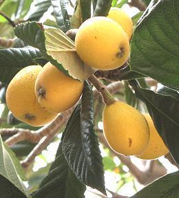 [Nor Ashkhar (Armenian); Eriobotrya japonica]
Originating in southeastern China, loquats were carried to Japan in ancient times and are thoroughly naturalized there, where the fruit is very popular. Loquats are now grown in subtropical regions worldwide, both for fruit and as decoratives.
This fruit contains from one to five large shiny seeds. The seeds are mildly toxic with cyanide but in Japan these are used to flavor a form of sake with an aroma similar to apricot kernels (also laced with cyanide). Loquat fruits are eaten fresh, made into jam, jelly and chutney, and are sometimes served simmered in a light syrup. They are also made into fruit wine and in China loquat syrup is used medicinally.
The photo specimens, growing on a volunteer tree at the side of my
house, are typically 1.4 inches diameter and 1.6 inches long. The
volunteer tree, of unknown origin, has grown large quickly and fruits
prolifically. The tree I bought from a nursery has remained small and
set almost no fruit until it ws over 40 years old. Loquats flower in
the fall, with ripe fruit appearing in May.
Quince
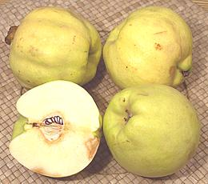 [Cydonia oblonga]
Originating probably in the Caucasus region, this fruit looks like a lumpy Yellow apple. Eaten raw the flesh is medium sweet and perfumy but coarse and more than a bit dry, so it is almost always used cooked. There is a sweet variety that has been eaten raw since ancient times but it is not available in North America.
The quince has been cultivated since prehistory, perhaps before apples. In fact the "apple" given by Paris to Aphrodite was actually a quince, mistranslated in later times. Actually, most "apples" in ancient legends are a mistranslation of quince.
Aside from being stewed, as was done in Roman times, it is made into jams and jellies, and often used to improve the flavor of applesauce and apple pies. With long cooking quince flesh becomes red.
Because of a bacterial blight problem quince is seldom grown in North
America. Most for sale here are imported from Argentina. The photo
specimens were 3.4 inches diameter and weighed 10-1/4 ounces.
Other Pome Fruits
Medlar
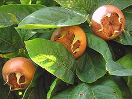 [Common medlar; Mespilus germanica]
This rather strange fruit has been cultivated in Europe since the time of Ancient Greece, brought from Azerbaijan about 700 BCE. The fruit is small, 0.8 to 1.2 inches diameter. In the far south of Europe this fruit ripens completely and can be eaten right off the tree, but in northern climates the situation is quite different - the fruit remains hard, acidic and high in bitter tannins.
To be edible, the fruit must be "bletted". This is fastest if the
fruit has been frozen on the tree, but it will happen in storage after
a while. The skin of the fruit becomes brown and wrinkly - the pulp
turns brown and soft, sweet and edible, sort of like apple sauce. It
can be spooned right out of the skin. To most people it would look
rotten.
Photo by Andrew Dunn distributed under license Creative
Commons
Attribution-ShareAlike 2.0 Generic.
California Holly
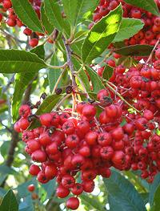 [Toyon, Christmas berry; Heteromeles arbutifolia]
This shrub, growing to 15 feet, is native to the coast of California from Fort Bragg down into Baja California, Mexico, and there's a strip in the Central Valley. It is a profuse producer of red pomes, called berries because of their small size (about 0.4 inch diameter). These are edible and can be made into jellies.
They were an important food for Coastal Indians. Some were eaten
fresh, thought they tend to be sour and astringent, and were also used
with water to make juice, but most were dried for later use in porridges
and pancakes. You don't want to over-do them raw, because they contain
a small amount of cyanide, which is eliminated by drying and/or cooking.
Photo by docentjoyce distributed under license Creative
Commons
Attribution-ShareAlike 2.0 Generic.
Serviceberry
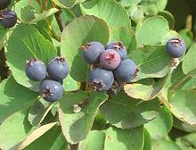 [Saskatoon, Pacific serviceberry, Western serviceberry, Alder-leaf shadbush, Dwarf shadbush, Chuckley pear, Western juneberry, Pigeon berry; Amelanchier alnifolia | Snowy mespilus, Snowy mespil, Juneberry; Amelanchier lamarckii | other Amelanchier species]
A. anifolia is a shrub or small tree growing to about 26 feet high. It is native to most of western Canada and just a bit into Alaska. It is also found in the northwest states down a little into California, and is common in North and South Dakota. It bears edible purple fruit up to 0.6 inch diameter and is the only commercially harvested Amelanchier. The berries look a lot like the unrelated blueberries, and taste a little like them, with a hint of almond flavor from the seeds. Locally, the berries are eaten fresh or made into pies and jams.
A. lamarckii is of North American origin but widely planted
and naturalized in Europe, mostly as a decorative but also for fruit.
It is probably a hybrid because it isn't found in the wild in North
America. Most other Amelanchier species are also similarly edible.
Photo by Meggar at English Language Wikipedia, distributed
under license Creative Commons
Attribution-ShareAlike 3.0 Unported, Attribution Required.
Chokeberries / Aronia
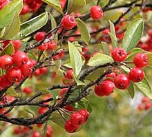 [Red Chokeberry; Aronia arbutifolia | Black Chokeberry; Aronia melanocarpa | Purple Chokeberry; Aronia prunifolia]
These shrubs, growing to 13 feet, are native to eastern North America, but at least one species is naturalized in Europe. They come in three colors with the purple a natural hybrid of the black and red. They produce pomes, called berries because of their small size, up to 0.4 inch diameter. In Lithuania these are used to make wine, and in Poland they are mixed with other ingredients to make herbal teas. They are also used for flavoring and color in beverages and yogurt, as well as being baked into bread. Chokeberries should not be confused with Chokecherries (Prunus virginiana), which are Stone Fruit.
Black chokeberry is noted for extremely high antioxidant content,
including polyphenols and especially anthocyanins, one of the highest
of any fruit. Entrepreneurs have thus designated it as a "superfruit",
targeting the ever profitable "health conscious" market in North America.
Actual benefit to humans is conjectural at this time, but research is
being conducted.
Photo by Abrahami distributed under license Creative
Commons
Attribution-ShareAlike 2.5 Generic.
Hawthorns / Thornapples
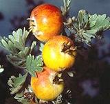
[May-tree, Whitethorn, Hawberry; Genus Crataegus - Genus Rhaphiolepis]
Crataegus Hawthorns are native to temperate zones of Europe,
Asia and North America. Rhaphiolepis Hawthorns are native to
warm and subtropical regions of Asia, particularly China, Japan, Korea
and northern parts of Thailand and Vietnam. These genera have
their own Hawthorn / Thornapple page.
Rowan
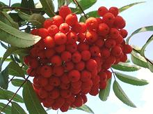 [Mountain Ash, Quickbeam; Sorbus aucuparia var edulis and other Sorbus varieties and species]
This tree, which grows to 49 feet, is native to most of Europe (except
the most southern parts), the Caucasus, Siberia and parts of North Africa.
The fruit are born in large clusters of pomes about 0.4 inch diameter.
Fresh Sorbus berries are generally bitter, but can be made
palatable by cooking into compote or made into jam, jelly, juice or
wine or liqueur. In recent times several non-bitter cultivars have been
found, which stands to increase the usability of this tree. The leaves
have been fermented along with Myrica gale and oak bark to
produce an herb beer.
Photo by Genet distributed under license Creative
Commons
Attribution-ShareAlike 3.0 Unported.